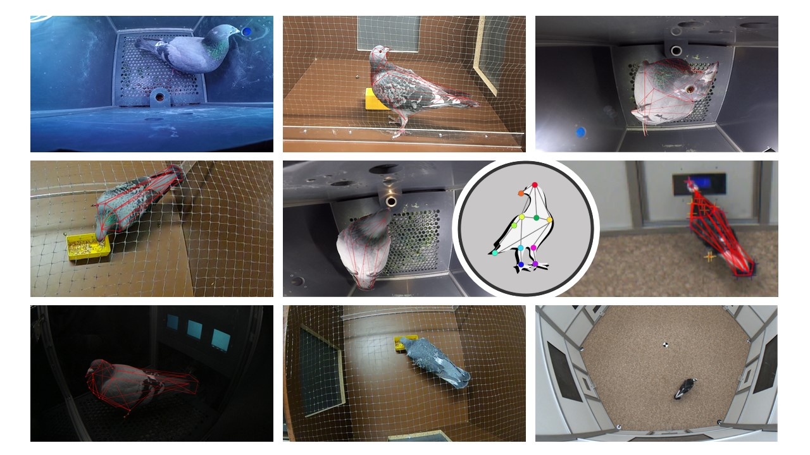
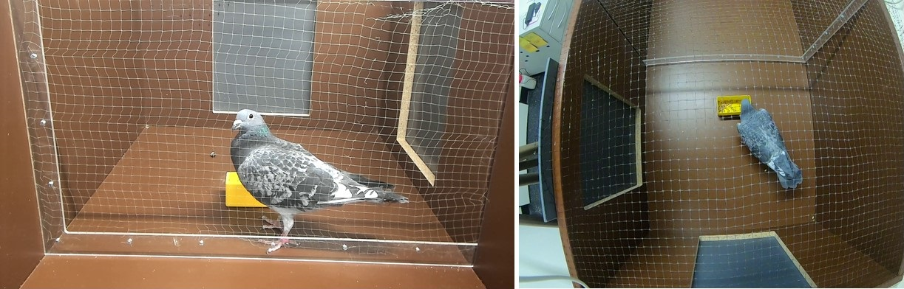
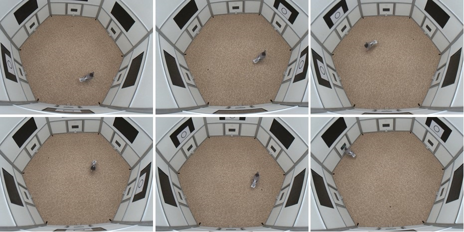
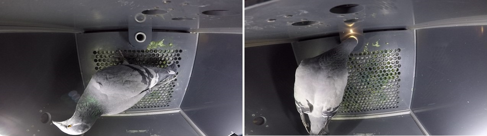
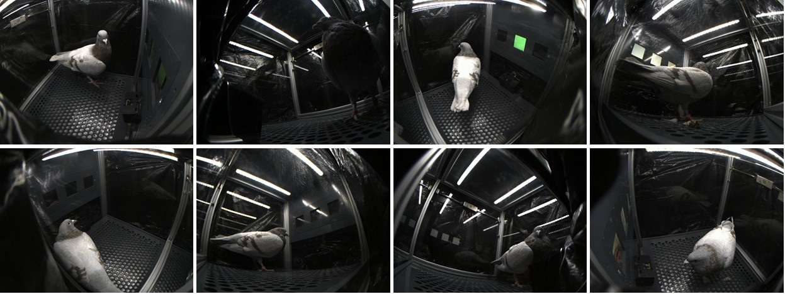

Dataset
Contents
Dataset¶
The Pigeon Super Model is based on a multi-view dataset of 1151 manually labeled video frames depicting various pigeons in different experimental setups. It was originally intended to train neural networks for video based markerless pose tracking in pigeons. It is intended to be well balanced to generalize well to new subjects, new videos and even unseen experimental setups. The different frames were extracted from multiple views and can thus be used for post-hoc 3D reconstruction in calibrated multi-camera setups.

Below is a summary of the dataset’s main characteristics:
Total Number of Videos |
190 |
|---|---|
Total Camera Angles |
20 |
Total Number of Pigeons |
23 |
Total Number of Frames |
1151 |
Image Sizes |
[1280:960]; [1920:1080]; [1440:1080] |
Recording Framerates |
20Hz; 120Hz; 60Hz; 75Hz |
Number of Keypoints |
39 |
Download link |
Different Setups¶
So far, only pigeons filmed in laboratory settings are included. Get in touch to contribute! The original videos come from 4 different experiments conducted in the Biopsychology Lab at the Ruhr University Bochum.
Experiment 1¶

Description |
The pigeons are feeding and moving inside an experimental cage. The videos are taken through a mesh in a frontal view and from above. |
|---|---|
Videos |
48 |
Cameras |
2 |
Pigeons |
8 |
Frames |
240 |
Image size |
1280 x 960; 1920 x 1080 |
FPS |
20; 120 |
Credit |
Experiment 2¶

Description |
The pigeons are moving freely inside a 2m x 2m hexagonal arena and occasionally interacting with feeders on the walls. The videos are filmed from six different perspectives with cameras mounted on the upper side walls of the arena. |
|---|---|
Videos |
48 |
Cameras |
6 |
Pigeons |
4 |
Frames |
330 |
Image size |
1440 x 1080 |
FPS |
75 |
Credit |
Experiment 3¶

Description |
The pigeons peck at different keys in a Skinner box. The cameras are attached to the upper front wall, capturing the inside of the box from above. |
|---|---|
Videos |
48 |
Cameras |
2 |
Pigeons |
5 |
Frames |
291 |
Image size |
1920 x 1080 |
FPS |
60 |
Credit |
Experiment 4¶

Description |
Short snippets of pigeons moving around inside a Skinner box with transparent side walls. The videos are taken from 8 different perspectives with some cameras attached to the floor of the box and some mounted to the side walls. |
|---|---|
Videos |
46 |
Cameras |
8 |
Pigeons |
6 |
Frames |
290 |
Image size |
1440 x 1080 |
FPS |
75 |
Credit |
Labeled Skeleton¶
Our skeleton consists of 39 keypoints, distributed across different sections of the pigeon’s body.
Keypoint |
Description |
|
|---|---|---|
1 |
US(UpperSpine=LN) |
Uppermost point of the spine (transition from spine to neck section), between the shoulder blades. |
2 |
LS(LowerSpine) |
Root of the long tail feathers. |
3 |
MS(MiddleSpine) |
Center point of the spine. |
4 |
UHS(UpperHalfSpine) |
Middle point of the upper half of the spine section. |
5 |
LHS(LowerHalfSpine) |
Middle point of the lower half of the spine section. |
6 |
TL(TailLeft) |
Outermost edge of the left side rounding of the tail feathers (if the tail feathers are spread apart, the left feather is labeled). |
7 |
TR(TailRight) |
Outermost edge of the left side rounding of the tail feathers (if the tail feathers are spread apart, the left feather is labeled). |
8 |
TC(TailCenter) |
Rear end of the middle tail feather. |
9 |
LWS(LeftWingShoulder) |
Region where the left wing is connected to the body (this label may slightly vary across the manually labeled images since the actual joint is covered by the bird’s plumage). |
10 |
LWE(LeftWingElbow) |
Most frontal point of the left wing (when the wing is flat against the body). |
11 |
LWW(LeftWingWrist |
Transition from wing bone to left wing feathers. |
12 |
LWT(LeftWingTip) |
Rear end of the left wing’s longest feather. |
13 |
RWS(RightWingShoulder) |
Region where the right wing is connected to the body (this label may slightly vary across the manually labeled images since the actual joint is covered by the bird’s plumage). |
14 |
RWE(RightWingElbow) |
Most frontal point of the right wing (when the wing is flat against the body). |
15 |
RWW(RightWingWrist) |
Transition from wing bone to right wing feathers. |
16 |
RWT(RightWingTip) |
Rear end of the right wing’s longest feather. |
17 |
H(Head) |
Top of the skull, centered on an imaginary line between the eyes. |
18 |
UC(UpperCere) |
Upper end of the cere, centered between the two halves. |
19 |
LC(LowerCere) |
Lower end of the cere. |
20 |
BT(BeakTip) |
Tip of the beak. |
21 |
LE(LeftEye) |
Left eye (centered between the eyelids). |
22 |
RE(RightEye) |
Right eye (centered between the eyelids). |
23 |
UN(UpperNeck) |
Highest point of the neck, just below the beginning of the cranium. |
24 |
MN(MiddleNeck) |
Center point of the neck. |
25 |
UHN(UpperHalfNeck) |
Middle point of the upper half of the neck section. |
26 |
LHN(LowerHalfNeck) |
Middle point of the lower half of the neck section. |
27 |
LC(LeftChest) |
Outer visible side of the left pectoral muscle (close to left ‘elbow’ label). |
28 |
RC(RightChest) |
Outer visible side of the right pectoral muscle (close to right ‘elbow’ label). |
29 |
MC(MiddleChest) |
Center point of the chest section. |
30 |
LHC(LeftHalfChest) |
Middle point of the left half of the chest section. |
31 |
RHC(RightHalfChest) |
Middle point of the right half of the chest section. |
32 |
C(Chin) |
Underside of the beak, where it merges into the throat. |
33 |
MT(MiddleThroat) |
Center of the throat. |
34 |
LT(LeftTibia) |
Feathered tigh of the left leg. |
35 |
LA(LeftAnkle) |
Centered on the featherless lower part of the left leg. |
36 |
LF(LeftFoot) |
Middle claw of the left foot, close to the ankle. |
37 |
RT(RightTibia) |
Feathered tigh of the right leg. |
38 |
RA(RightAnkle) |
Centered on the featherless lower part of the right leg. |
39 |
RF(RightFoot) |
Middle claw of the right foot, close to the ankle. |